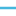

<!doctype html>
<html lang="en">
    <head>
        <meta charset="utf-8">
        <meta http-equiv="X-UA-Compatible" content="IE=edge">
        <meta name="viewport" content="initial-scale=1,user-scalable=no,maximum-scale=1,width=device-width">
        <meta name="mobile-web-app-capable" content="yes">
        <meta name="apple-mobile-web-app-capable" content="yes">
        <link rel="stylesheet" href="css/leaflet.css">
        <link rel="stylesheet" href="css/L.Control.Layers.Tree.css">
        <link rel="stylesheet" href="css/qgis2web.css">
        <link rel="stylesheet" href="css/fontawesome-all.min.css">
        <style>
        #map {
            width: 1535px;
            height: 833px;
        }
        </style>
        <title>Fortwilliam GC</title>
    </head>
    <body>
        <div id="map">
        </div>
        <script src="js/qgis2web_expressions.js"></script>
        <script src="js/leaflet.js"></script>
        <script src="js/L.Control.Layers.Tree.min.js"></script>
        <script src="js/leaflet.rotatedMarker.js"></script>
        <script src="js/leaflet.pattern.js"></script>
        <script src="js/leaflet-hash.js"></script>
        <script src="js/Autolinker.min.js"></script>
        <script src="js/rbush.min.js"></script>
        <script src="js/labelgun.min.js"></script>
        <script src="js/labels.js"></script>
        <script src="data/FWExistingDrains_1.js"></script>
        <script src="data/MainDrains_2.js"></script>
        <script src="data/Notes_3.js"></script>
        <script src="data/FWStreams_4.js"></script>
        <script src="data/Contoursat1m_5.js"></script>
        <script>
        var map = L.map('map', {
            zoomControl:false, maxZoom:19, minZoom:17
        }).fitBounds([[54.640864712887854,-5.941113388307209],[54.64814876321086,-5.918787682508767]]);
        var hash = new L.Hash(map);
        map.attributionControl.setPrefix('<a href="https://github.com/tomchadwin/qgis2web" target="_blank">qgis2web</a> &middot; <a href="https://leafletjs.com" title="A JS library for interactive maps">Leaflet</a> &middot; <a href="https://qgis.org">QGIS</a>');
        var autolinker = new Autolinker({truncate: {length: 30, location: 'smart'}});
        // remove popup's row if "visible-with-data"
        function removeEmptyRowsFromPopupContent(content, feature) {
         var tempDiv = document.createElement('div');
         tempDiv.innerHTML = content;
         var rows = tempDiv.querySelectorAll('tr');
         for (var i = 0; i < rows.length; i++) {
             var td = rows[i].querySelector('td.visible-with-data');
             var key = td ? td.id : '';
             if (td && td.classList.contains('visible-with-data') && feature.properties[key] == null) {
                 rows[i].parentNode.removeChild(rows[i]);
             }
         }
         return tempDiv.innerHTML;
        }
        // add class to format popup if it contains media
		function addClassToPopupIfMedia(content, popup) {
			var tempDiv = document.createElement('div');
			tempDiv.innerHTML = content;
			if (tempDiv.querySelector('td img')) {
				popup._contentNode.classList.add('media');
					// Delay to force the redraw
					setTimeout(function() {
						popup.update();
					}, 10);
			} else {
				popup._contentNode.classList.remove('media');
			}
		}
        var zoomControl = L.control.zoom({
            position: 'topleft'
        }).addTo(map);
        var bounds_group = new L.featureGroup([]);
        function setBounds() {
        }
        map.createPane('pane_GoogleSatellite_0');
        map.getPane('pane_GoogleSatellite_0').style.zIndex = 400;
        var layer_GoogleSatellite_0 = L.tileLayer('https://mt1.google.com/vt/lyrs=s&x={x}&y={y}&z={z}', {
            pane: 'pane_GoogleSatellite_0',
            opacity: 1.0,
            attribution: '',
            minZoom: 17,
            maxZoom: 19,
            minNativeZoom: 0,
            maxNativeZoom: 19
        });
        layer_GoogleSatellite_0;
        map.addLayer(layer_GoogleSatellite_0);
        function pop_FWExistingDrains_1(feature, layer) {
            var popupContent = '<table>\
                    <tr>\
                        <td colspan="2">' + (feature.properties['id'] !== null ? autolinker.link(feature.properties['id'].toLocaleString()) : '') + '</td>\
                    </tr>\
                </table>';
            var content = removeEmptyRowsFromPopupContent(popupContent, feature);
			layer.on('popupopen', function(e) {
				addClassToPopupIfMedia(content, e.popup);
			});
			layer.bindPopup(content, { maxHeight: 400 });
        }

        function style_FWExistingDrains_1_0() {
            return {
                pane: 'pane_FWExistingDrains_1',
                opacity: 1,
                color: 'rgba(68,183,221,1.0)',
                dashArray: '',
                lineCap: 'square',
                lineJoin: 'bevel',
                weight: 3.0,
                fillOpacity: 0,
                interactive: true,
            }
        }
        map.createPane('pane_FWExistingDrains_1');
        map.getPane('pane_FWExistingDrains_1').style.zIndex = 401;
        map.getPane('pane_FWExistingDrains_1').style['mix-blend-mode'] = 'normal';
        var layer_FWExistingDrains_1 = new L.geoJson(json_FWExistingDrains_1, {
            attribution: '',
            interactive: true,
            dataVar: 'json_FWExistingDrains_1',
            layerName: 'layer_FWExistingDrains_1',
            pane: 'pane_FWExistingDrains_1',
            onEachFeature: pop_FWExistingDrains_1,
            style: style_FWExistingDrains_1_0,
        });
        bounds_group.addLayer(layer_FWExistingDrains_1);
        map.addLayer(layer_FWExistingDrains_1);
        function pop_MainDrains_2(feature, layer) {
            var popupContent = '<table>\
                    <tr>\
                        <td colspan="2">' + (feature.properties['id'] !== null ? autolinker.link(feature.properties['id'].toLocaleString()) : '') + '</td>\
                    </tr>\
                    <tr>\
                        <td colspan="2">' + (feature.properties['Main Drain'] !== null ? autolinker.link(feature.properties['Main Drain'].toLocaleString()) : '') + '</td>\
                    </tr>\
                </table>';
            var content = removeEmptyRowsFromPopupContent(popupContent, feature);
			layer.on('popupopen', function(e) {
				addClassToPopupIfMedia(content, e.popup);
			});
			layer.bindPopup(content, { maxHeight: 400 });
        }

        function style_MainDrains_2_0() {
            return {
                pane: 'pane_MainDrains_2',
                opacity: 1,
                color: 'rgba(52,103,204,1.0)',
                dashArray: '',
                lineCap: 'square',
                lineJoin: 'bevel',
                weight: 4.0,
                fillOpacity: 0,
                interactive: true,
            }
        }
        map.createPane('pane_MainDrains_2');
        map.getPane('pane_MainDrains_2').style.zIndex = 402;
        map.getPane('pane_MainDrains_2').style['mix-blend-mode'] = 'normal';
        var layer_MainDrains_2 = new L.geoJson(json_MainDrains_2, {
            attribution: '',
            interactive: true,
            dataVar: 'json_MainDrains_2',
            layerName: 'layer_MainDrains_2',
            pane: 'pane_MainDrains_2',
            onEachFeature: pop_MainDrains_2,
            style: style_MainDrains_2_0,
        });
        bounds_group.addLayer(layer_MainDrains_2);
        map.addLayer(layer_MainDrains_2);
        function pop_Notes_3(feature, layer) {
            var popupContent = '<table>\
                    <tr>\
                        <td colspan="2">' + (feature.properties['id'] !== null ? autolinker.link(feature.properties['id'].toLocaleString()) : '') + '</td>\
                    </tr>\
                    <tr>\
                        <td colspan="2">' + (feature.properties['Notes'] !== null ? autolinker.link(feature.properties['Notes'].toLocaleString()) : '') + '</td>\
                    </tr>\
                </table>';
            var content = removeEmptyRowsFromPopupContent(popupContent, feature);
			layer.on('popupopen', function(e) {
				addClassToPopupIfMedia(content, e.popup);
			});
			layer.bindPopup(content, { maxHeight: 400 });
        }

        function style_Notes_3_0() {
            return {
                pane: 'pane_Notes_3',
                radius: 2.0,
                opacity: 1,
                color: 'rgba(255,255,255,1.0)',
                dashArray: '',
                lineCap: 'butt',
                lineJoin: 'miter',
                weight: 2.0,
                fill: true,
                fillOpacity: 1,
                fillColor: 'rgba(255,255,255,1.0)',
                interactive: true,
            }
        }
        map.createPane('pane_Notes_3');
        map.getPane('pane_Notes_3').style.zIndex = 403;
        map.getPane('pane_Notes_3').style['mix-blend-mode'] = 'normal';
        var layer_Notes_3 = new L.geoJson(json_Notes_3, {
            attribution: '',
            interactive: true,
            dataVar: 'json_Notes_3',
            layerName: 'layer_Notes_3',
            pane: 'pane_Notes_3',
            onEachFeature: pop_Notes_3,
            pointToLayer: function (feature, latlng) {
                var context = {
                    feature: feature,
                    variables: {}
                };
                return L.circleMarker(latlng, style_Notes_3_0(feature));
            },
        });
        bounds_group.addLayer(layer_Notes_3);
        map.addLayer(layer_Notes_3);
        function pop_FWStreams_4(feature, layer) {
            var popupContent = '<table>\
                    <tr>\
                        <td colspan="2">' + (feature.properties['id'] !== null ? autolinker.link(feature.properties['id'].toLocaleString()) : '') + '</td>\
                    </tr>\
                    <tr>\
                        <td colspan="2">' + (feature.properties['FW Streams'] !== null ? autolinker.link(feature.properties['FW Streams'].toLocaleString()) : '') + '</td>\
                    </tr>\
                </table>';
            var content = removeEmptyRowsFromPopupContent(popupContent, feature);
			layer.on('popupopen', function(e) {
				addClassToPopupIfMedia(content, e.popup);
			});
			layer.bindPopup(content, { maxHeight: 400 });
        }

        function style_FWStreams_4_0() {
            return {
                pane: 'pane_FWStreams_4',
                opacity: 1,
                color: 'rgba(27,37,139,1.0)',
                dashArray: '',
                lineCap: 'square',
                lineJoin: 'bevel',
                weight: 6.0,
                fillOpacity: 0,
                interactive: true,
            }
        }
        map.createPane('pane_FWStreams_4');
        map.getPane('pane_FWStreams_4').style.zIndex = 404;
        map.getPane('pane_FWStreams_4').style['mix-blend-mode'] = 'normal';
        var layer_FWStreams_4 = new L.geoJson(json_FWStreams_4, {
            attribution: '',
            interactive: true,
            dataVar: 'json_FWStreams_4',
            layerName: 'layer_FWStreams_4',
            pane: 'pane_FWStreams_4',
            onEachFeature: pop_FWStreams_4,
            style: style_FWStreams_4_0,
        });
        bounds_group.addLayer(layer_FWStreams_4);
        map.addLayer(layer_FWStreams_4);
        function pop_Contoursat1m_5(feature, layer) {
            var popupContent = '<table>\
                    <tr>\
                        <td colspan="2">' + (feature.properties['fid'] !== null ? autolinker.link(feature.properties['fid'].toLocaleString()) : '') + '</td>\
                    </tr>\
                    <tr>\
                        <td colspan="2">' + (feature.properties['ID'] !== null ? autolinker.link(feature.properties['ID'].toLocaleString()) : '') + '</td>\
                    </tr>\
                    <tr>\
                        <td colspan="2">' + (feature.properties['ELEV'] !== null ? autolinker.link(feature.properties['ELEV'].toLocaleString()) : '') + '</td>\
                    </tr>\
                </table>';
            var content = removeEmptyRowsFromPopupContent(popupContent, feature);
			layer.on('popupopen', function(e) {
				addClassToPopupIfMedia(content, e.popup);
			});
			layer.bindPopup(content, { maxHeight: 400 });
        }

        function style_Contoursat1m_5_0() {
            return {
                pane: 'pane_Contoursat1m_5',
                opacity: 1,
                color: 'rgba(197,198,192,1.0)',
                dashArray: '',
                lineCap: 'square',
                lineJoin: 'bevel',
                weight: 1.0,
                fillOpacity: 0,
                interactive: true,
            }
        }
        map.createPane('pane_Contoursat1m_5');
        map.getPane('pane_Contoursat1m_5').style.zIndex = 405;
        map.getPane('pane_Contoursat1m_5').style['mix-blend-mode'] = 'normal';
        var layer_Contoursat1m_5 = new L.geoJson(json_Contoursat1m_5, {
            attribution: '',
            interactive: true,
            dataVar: 'json_Contoursat1m_5',
            layerName: 'layer_Contoursat1m_5',
            pane: 'pane_Contoursat1m_5',
            onEachFeature: pop_Contoursat1m_5,
            style: style_Contoursat1m_5_0,
        });
        bounds_group.addLayer(layer_Contoursat1m_5);
        var baseMaps = {};
        var overlaysTree = [
            {label: ' Contours at 1m', layer: layer_Contoursat1m_5},
            {label: ' FW Streams', layer: layer_FWStreams_4},
            {label: ' Notes', layer: layer_Notes_3},
            {label: ' Main Drains', layer: layer_MainDrains_2},
            {label: ' FW Existing Drains', layer: layer_FWExistingDrains_1},
            {label: "Google Satellite", layer: layer_GoogleSatellite_0},]
        var lay = L.control.layers.tree(null, overlaysTree,{
            //namedToggle: true,
            //selectorBack: false,
            //closedSymbol: '&#8862; &#x1f5c0;',
            //openedSymbol: '&#8863; &#x1f5c1;',
            //collapseAll: 'Collapse all',
            //expandAll: 'Expand all',
            collapsed: false, 
        });
        lay.addTo(map);
		document.addEventListener("DOMContentLoaded", function() {
            // set new Layers List height which considers toggle icon
            function newLayersListHeight() {
                var layerScrollbarElement = document.querySelector('.leaflet-control-layers-scrollbar');
                if (layerScrollbarElement) {
                    var layersListElement = document.querySelector('.leaflet-control-layers-list');
                    var originalHeight = layersListElement.style.height 
                        || window.getComputedStyle(layersListElement).height;
                    var newHeight = parseFloat(originalHeight) - 50;
                    layersListElement.style.height = newHeight + 'px';
                }
            }
            var isLayersListExpanded = true;
            var controlLayersElement = document.querySelector('.leaflet-control-layers');
            var toggleLayerControl = document.querySelector('.leaflet-control-layers-toggle');
            // toggle Collapsed/Expanded and apply new Layers List height
            toggleLayerControl.addEventListener('click', function() {
                if (isLayersListExpanded) {
                    controlLayersElement.classList.remove('leaflet-control-layers-expanded');
                } else {
                    controlLayersElement.classList.add('leaflet-control-layers-expanded');
                }
                isLayersListExpanded = !isLayersListExpanded;
                newLayersListHeight()
            });	
			// apply new Layers List height if toggle layerstree
			if (controlLayersElement) {
				controlLayersElement.addEventListener('click', function(event) {
					var toggleLayerHeaderPointer = event.target.closest('.leaflet-layerstree-header-pointer span');
					if (toggleLayerHeaderPointer) {
						newLayersListHeight();
					}
				});
			}
            // Collapsed/Expanded at Start to apply new height
            setTimeout(function() {
                toggleLayerControl.click();
            }, 10);
            setTimeout(function() {
                toggleLayerControl.click();
            }, 10);
            // Collapsed touch/small screen
            var isSmallScreen = window.innerWidth < 650;
            if (isSmallScreen) {
                setTimeout(function() {
                    controlLayersElement.classList.remove('leaflet-control-layers-expanded');
                    isLayersListExpanded = !isLayersListExpanded;
                }, 500);
            }  
        });       
        setBounds();
        var i = 0;
        layer_Notes_3.eachLayer(function(layer) {
            var context = {
                feature: layer.feature,
                variables: {}
            };
            layer.bindTooltip((layer.feature.properties['Notes'] !== null?String('<div style="color: #ffffff; font-size: 10pt; font-weight: bold; font-family: \'Open Sans\', sans-serif;">' + layer.feature.properties['Notes']) + '</div>':''), {permanent: true, offset: [-0, -16], className: 'css_Notes_3'});
            labels.push(layer);
            totalMarkers += 1;
              layer.added = true;
              addLabel(layer, i);
              i++;
        });
        var i = 0;
        layer_Contoursat1m_5.eachLayer(function(layer) {
            var context = {
                feature: layer.feature,
                variables: {}
            };
            layer.bindTooltip((layer.feature.properties['ELEV'] !== null?String('<div style="color: #ffffff; font-size: 11pt; font-family: \'Open Sans\', sans-serif;">' + layer.feature.properties['ELEV']) + '</div>':''), {permanent: true, offset: [-0, -16], className: 'css_Contoursat1m_5'});
            labels.push(layer);
            totalMarkers += 1;
              layer.added = true;
              addLabel(layer, i);
              i++;
        });
        resetLabels([layer_Notes_3,layer_Contoursat1m_5]);
        map.on("zoomend", function(){
            resetLabels([layer_Notes_3,layer_Contoursat1m_5]);
        });
        map.on("layeradd", function(){
            resetLabels([layer_Notes_3,layer_Contoursat1m_5]);
        });
        map.on("layerremove", function(){
            resetLabels([layer_Notes_3,layer_Contoursat1m_5]);
        });
        </script>
    </body>
</html>
